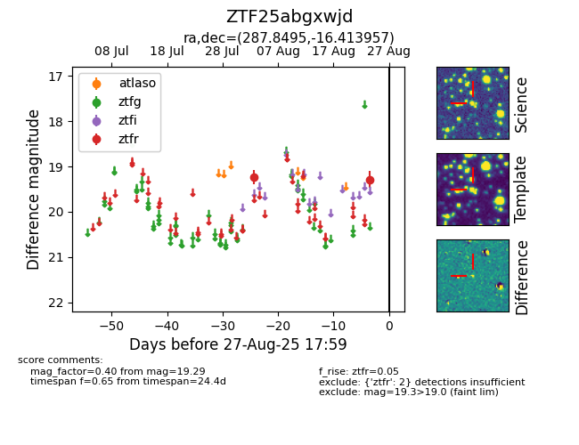

Target ZTF25abgxwjd at 2025-08-27 17:59, see:
FINK: fink-portal.org/ZTF25abgxwjd
Lasair: lasair-ztf.lsst.ac.uk/objects/ZTF25abgxwjd
ALeRCE: alerce.online/object/ZTF25abgxwjd
alt names
ZTF25abgxwjd (ztf,fink)
coordinates:
equatorial (ra, dec) = (287.8495,-16.41396)
galactic (l, b) = (20.3412,-11.71879)
photometry
last ztfr=19.29
2 ztfr detections
